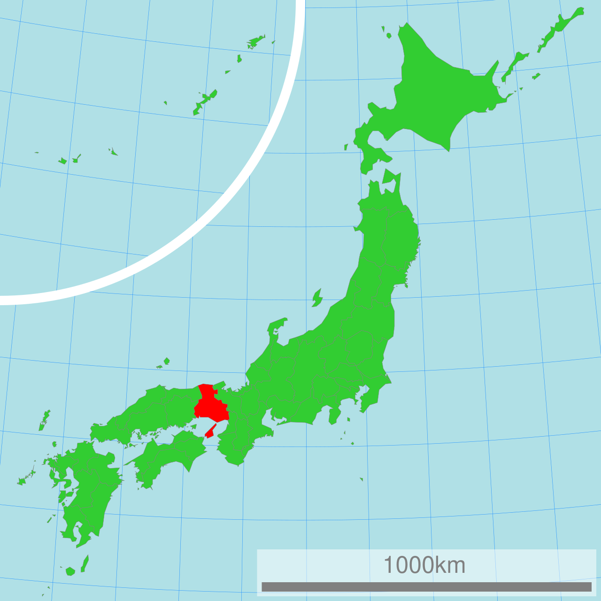

🕵️ City Leader Detectives
🗺️ Where are we?
Where is Hyogo in Japan? (simplified outline, not to scale)

Map: Map of Japan with highlight on Hyogo Prefecture (Wikimedia Commons)
Hyogo (red) is in the Kansai region, between Osaka and the Sea of Japan. Scroll down for the detailed Hyogo map.
Where are the cities? Hyogo Prefecture (rough map, not to scale). Tap a pin to learn about it.
Zoomed view (dashed area)
Choose a city
Pick a city to investigate. Each city has a quote game and a set of mayor questions.
This page was made with Claude AI for educational purposes. No information is obtained from the students.